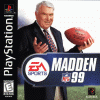
| Year | Cover | Curse | Year's Stats | Previous Years's Stats |
|---|---|---|---|---|
| 2001 | 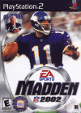 Dante Culpepper |
Knee injury, missed 5 games | 3028 total yards, 19 TDs | 4307 total yards, 40 TDs |
| 2002 | 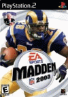 Marshall Faulk |
Ankle injury, missed 3 games | 1607 total yards, 10 TDs | 2147 total yards, 21 TDs |
| 2003 | 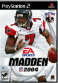 Michael Vick |
Broken leg, missed 12 games | 840 total yards, 5 TDs | 3713 total yards, 24 TDs |
| 2004 | 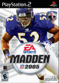 Ray Lewis |
Broken wrist, missed 1 game | No IDP, so who cares? | No IDP, so who cares? |
| 2005 | Donovan McNabb |
Sports hernia, missed 7 games | 2562 total yards, 17 TDs | 4095 total yards, 34 TDs |
| 2006 | 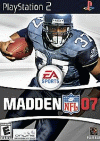 Shaun Alexander |
Broken foot, missed 7 games | 944 total yards, 7 TDs | 1958 total yards, 28 TDs |
| 2007 | 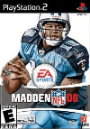 Vince Young |
Sore quadriceps, missed 1 game | 2941 total yards, 12 TDs | 2751 total yards, 19 TDs |
| 2008 | Brett Favre |
Retires, unretires, retires, unretires | 3515 total yards, 23 TDs | 4167 total yards, 28 TDs |
| 2009 | Troy Polamalu Larry Fitzgerald |
Polamalu: Knee injuries, missed 11 games Fitzgerald: NO INJURIES! |
Polamalu: No IDP, so who cares? Fitzgerald: 1092 total yards, 13 TDs |
Polamalu: No IDP, so who cares? Fitzgerald: 1434 total yards, 12 TDs |
| 2010 | 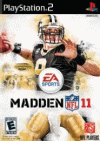 Drew Brees |
NO INJURIES! | 4624 total yards, 33 TDs | 4417 total yards, 36 TDs |
| 2011 | 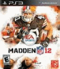 Peyton Hillis |
Hamstring injury, missed 6 games | 717 total yards, 3 TDs | 1667 total yards, 13 TDs |
| 2012 | 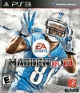 Calvin Johnson |
NO INJURIES! | 1964 total yards, 5 TDs | 1692 total yards, 16 TDs |
| 2013 | 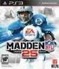 Barry Sanders |
RETIRED IN 1999! | n/a | n/a |
| 2014 | 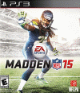 Richard Sherman |
NO INJURIES! | No IDP, so who cares? | No IDP, so who cares? |